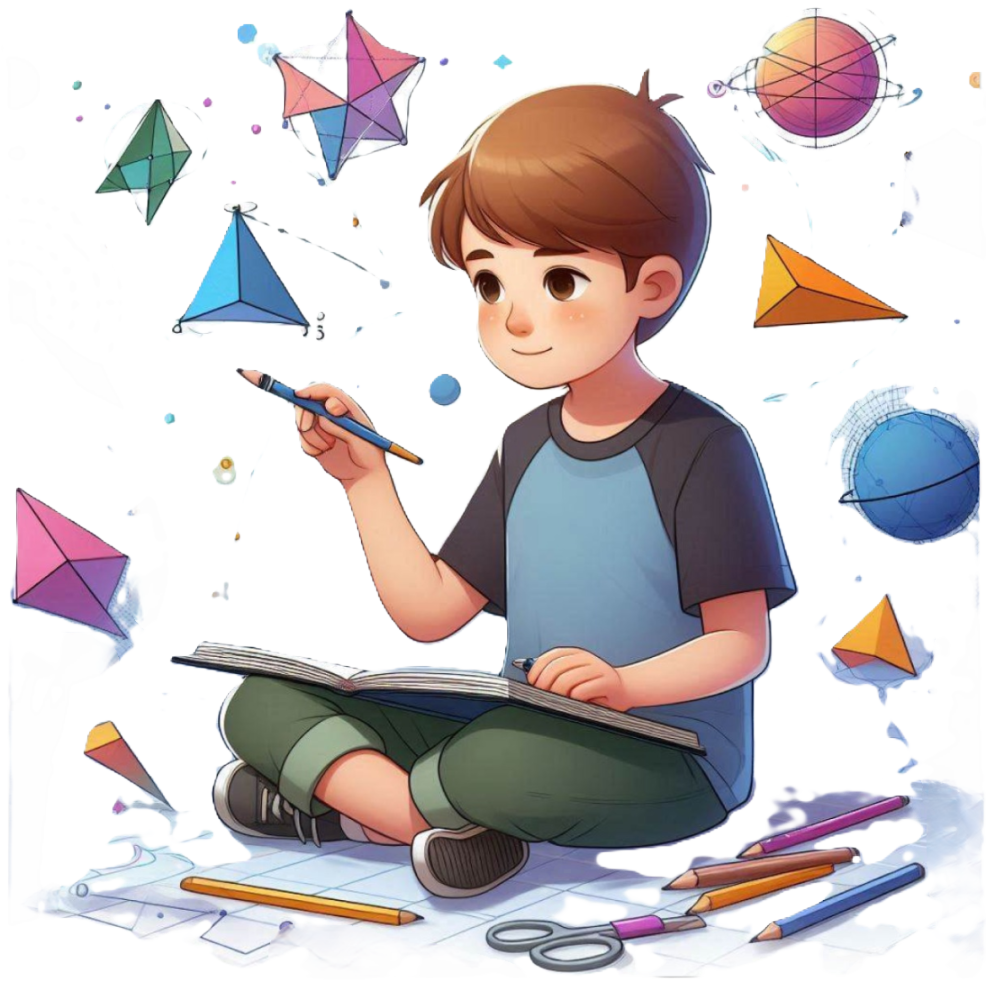
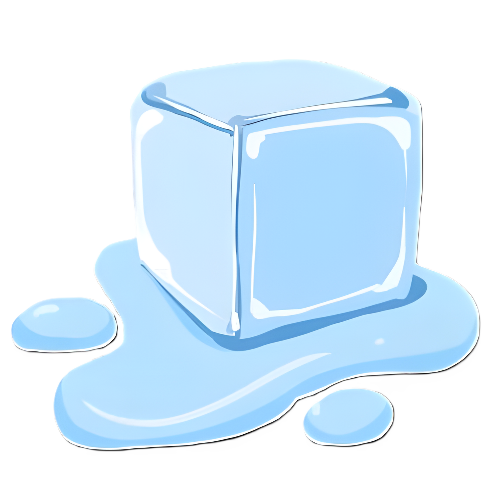
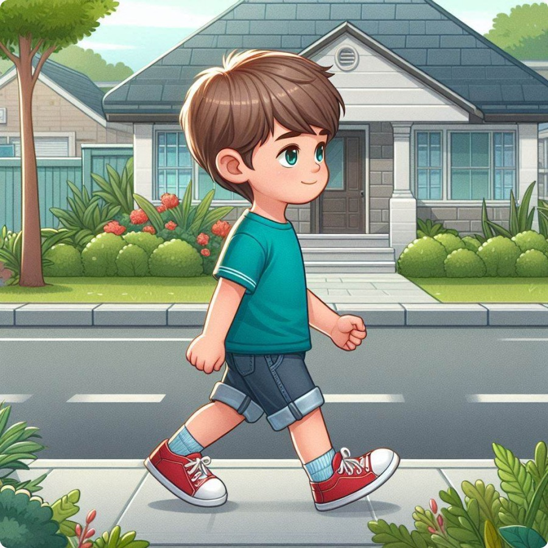
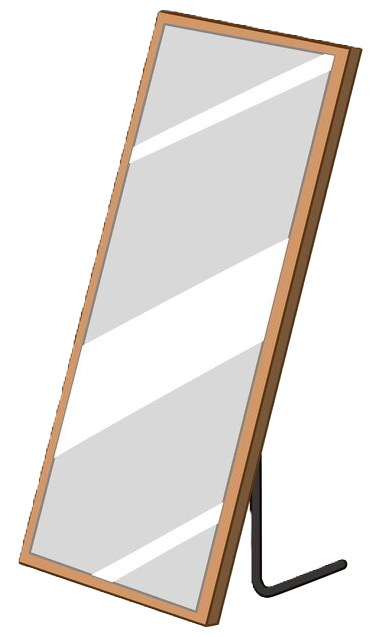
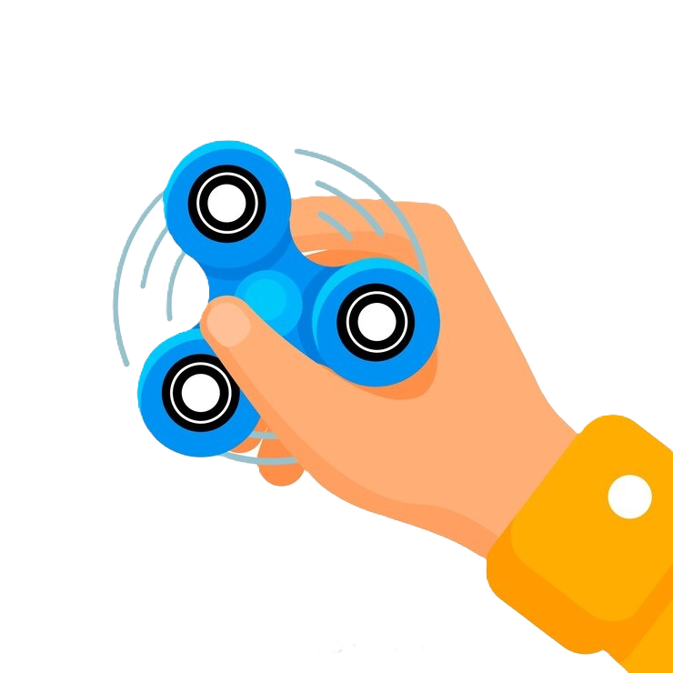
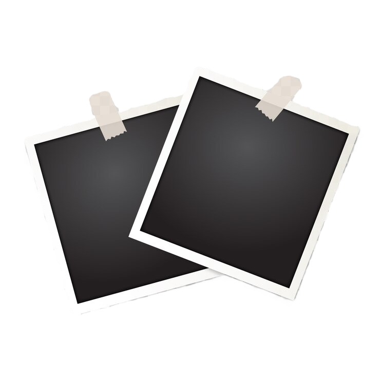

Transformasi Geometri

Media Pembelajaran Transformasi Geometri
Berbasis Web
MULAI
DAFTAR MATERI
Transformasi
: Mengubah Bentuk dan Posisi Objek

Pelajari dasar-dasar transformasi geometri untuk memahami bagaimana objek dapat diubah dalam bentuk dan posisi tanpa kehilangan sifat-sifat esensialnya
Materi

Translasi
: Memindahkan Objek
Kenali konsep translasi di mana objek dipindahkan secara linier, menjaga bentuk aslinya sambil berpindah dari satu tempat ke tempat lain
Materi
Refleksi
: Cermin dalam Geometri

Pahami refleksi sebagai cermin dalam geometri, di mana objek dibalik sesuai dengan sumbu simetri, menciptakan bayangan yang sempurna
Materi

Rotasi
: Memutar Objek di Sekitar Titik
Temukan bagaimana objek dapat diputar di sekitar titik tetap dengan sudut tertentu, mempertahankan bentuk dan ukuran aslinya
Materi
Dilatasi
: Mengubah Ukuran dengan Proporsi

Jelajahi konsep dilatasi yang memungkinkan objek diperbesar atau diperkecil dengan skala tertentu, sambil tetap menjaga proporsi dan bentuk aslinya.
Materi